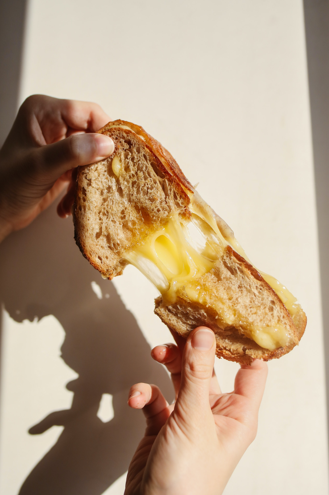
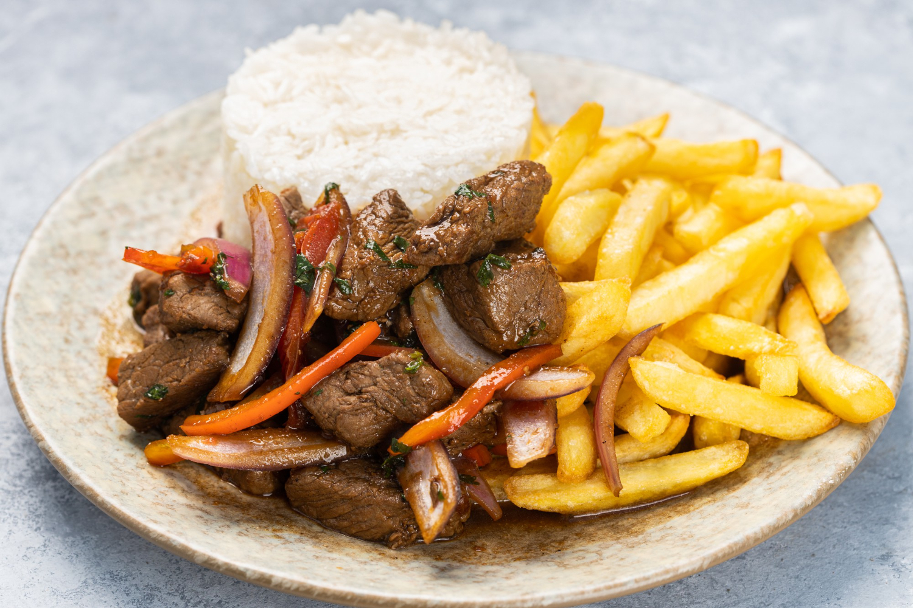
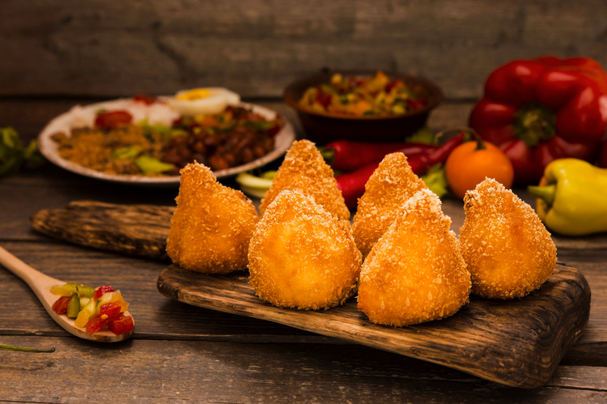

No dia 23 de abril de 2024, um sonho se tornará realidade.
E esse sonho é o nosso compromisso de trazer aconchego e sabor à sua vida, de uma maneira simples, rápida e acessível.
Sabemos o quanto o seu dia pode ser corrido, especialmente para os trabalhadores e estudantes que saem cedo de casa.
É por isso que estamos aqui, prontos para atender a todas as suas necessidades de refeição e refresco.
No Quiosque da Bia, não é apenas sobre comida. É sobre criar momentos especiais,
proporcionando-lhe aquelas afeições importantes que tornam a vida mais doce. Estamos ansiosos para fazer parte do seu dia,
tornando-o mais saboroso e aconchegante. Junte-se a nós e celebre cada momento com um sorriso no rosto e um prato cheio de delícias.
Bem-vindo à nossa casa.
Bem-vindo ao Quiosque da Bia!

Café da manhã
Pela manhã, quando a fome começa a bater, oferecemos uma variedade de opções de café da manhã e lanches deliciosos que vão energizar o seu dia.
Almoço
Na hora do almoço, proporcionamos uma pausa bem-vinda com refeições saborosas e nutritivas para recarregar suas energias.


Delícias da tarde
À tarde, quando a sede e a vontade de um lanche batem à porta, nossos açaís refrescantes e sorvetes irresistíveis estão prontos para te reconfortar.
Jantar
E após um longo dia de trabalho árduo, não há nada melhor do que uma jantinha saborosa para recarregar as energias e relaxar.